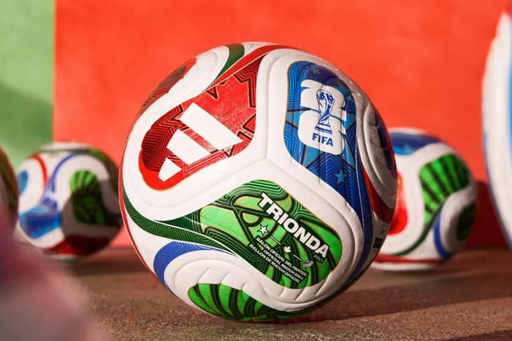

Bienvenido al Mundial 2026
La Copa del Mundo FIFA 2026 se celebrará en Estados Unidos, Canadá y México, siendo el primer mundial con 48 selecciones. Una fiesta del fútbol que reunirá a las mejores selecciones del planeta.


Selecciones a seguir
| Seleccion | Grupo | Ranking FIFA | Primer rival en fase de grupos |
|---|---|---|---|
| Francia | Grupo I | 1 | Senegal |
| Brasil | Grupo C | 6 | Marruecos |
| Argentina | Grupo J | 3 | Argelia |
| Portugal | Grupo K | 5 | Colombia |
| España | Grupo H | 2 | Cabo Verde |
Sedes del mundial
- Nueva York
- Los Ángeles
- Dallas
- Miami
- Toronto
- Vancouver
- Guadalajara
- Ciudad de México
Musica para el mundial
Eventos importantes
Copa Mundial de la FIFA 2026™ - Final
Domingo, 19 de julio 2026
Estadio Nueva York Nueva Jersey
Partido 104 - Ganador Partido 101 v Ganador Partido 102
Hora local: 20:00
Plataforma: Fox / FIFA+
Copa Mundial de la FIFA 2026™ - Partido por el tercer puesto
Sábado, 18 de julio 2026
Estadio Miami
Partido 103 - Perdedor Partido 101 v Perdedor Partido 102
Hora local: 20:00
Plataforma: Fox / FIFA+
Copa Mundial de la FIFA 2026™ - Semifinales
Martes, 14 de julio 2026 / Miércoles, 15 de julio 2026
Estadio Dallas / Estadio Atlanta
Partido 101 y Partido 102
Hora local: 20:00 (Primera semifinal)
Hora local: 20:00 (Segunda semifinal)
Plataforma: Fox / FIFA+